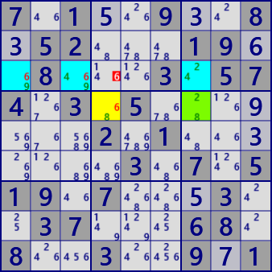

●ALS-Wing
ALS-Wingは、XY-Wing、DeathBlossom の拡張であり、ALSがLockedSetになったときその影響が波及することを用いるアルゴリズムです。
- XY-Wingのbivalue cellをALSに拡張 => DeathBlossom
- 幹cellとの連結とALSの重なり可能 => DeathBlossomEx
- 幹Cellへの弱リンクの効果を複数化 => ALS-Wing
ALS-Winの "lockedSet" を、次の図で解説します。
セル（幹セル）着目し、セルと連結した（弱リンク）のALSを選びます。
次に、ALSをLockedSetに変える セル#数字（偽セル数字） を選びます。
- [C]セル#数字 を真とすると、
- [B]ALS がLockedSetに変わり、
- LockedSetの影響[B->A]で、[A]セルの候補#数字がいずれも偽となるなら、
（B->Aの弱リンクによる効果は複数の#数字の場合もある） - [C]セル#数字は真ではない。
ここに示したのは ALS-Wing の基本形で、次のように拡張できます。これらは独立しており、同時に拡張できます。
- 偽セル数字と幹セル数字が、弱リンクとなっている[connected type]
- 幹セルと弱リンクの関係にある複数のALSで構成する
- 複数のALSに重なりがある[overlapping type]
●ALS-Wing の実例

ALS_Wing
Stem Cell: r4c7
ALS_1: r4c4 #68
ALS_2: r3c137 #2469
Eliminated: r3c4 #6
Stem Cell: r2c6
ALS_1: r346c4 #1789
ALS_2: r1238c5 #12478
Eliminated: r2c4 #8
Stem Cell: r3c4
ALS_1: r6c4 #78
ALS_2: r4c47 #178
ALS_3: r134c7 #1789
(ALS overlapping cells: r4c7)
Eliminated: r4c6 #8
Stem Cell: r2c5
ALS_1: r137c5 #1478
ALS_2: r138c5 #1247
(ALS overlapping cells: r13c5)
Eliminated: r2c6 #4
7.1..9..8.52...19..8...3.574.3.5.......2.1.......3.7.519.7...3..37...68.8..3..9.1
2.9..3..8.17...63..8...6.259.5.6.......3.2.......9.3.114.6...9..53...48.7..4..2.6